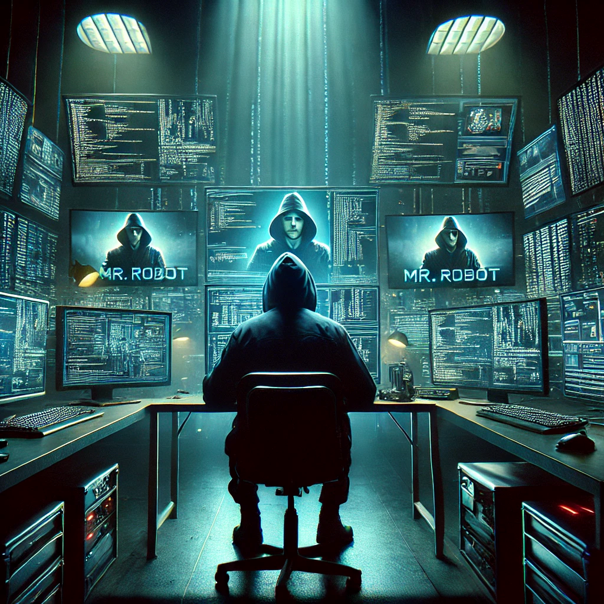
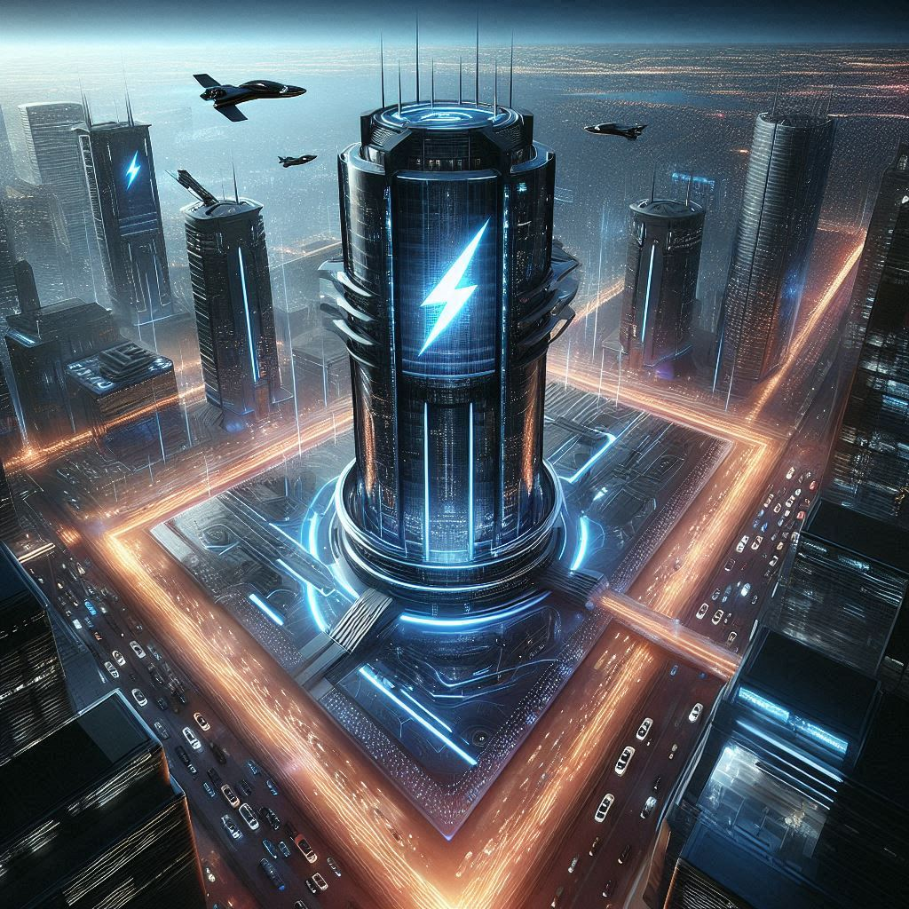

Elliot Alderson
postado 12 dezembro 1996

Elliot is a cybersecurity engineer by day and a vigilante hacker by night. Living in the bustling metropolis of New York City, he works for Allsafe Cybersecurity, where his job is to protect large corporations from cyber threats. However, driven by his contempt for the corruption and inequality in society, Elliot uses his exceptional hacking skills to expose these very corporations' wrongdoings.
Elliot is a complex and multi-layered character, grappling with mental health issues such as depression, anxiety, and most notably, dissociative identity disorder. His internal monologues often guide the narrative, providing an intense and fascinating glimpse into his troubled mind.
Ler Mais
Elliot is a complex and multi-layered character, grappling with mental health issues such as depression, anxiety, and most notably, dissociative identity disorder. His internal monologues often guide the narrative, providing an intense and fascinating glimpse into his troubled mind. This vulnerability, coupled with his remarkable abilities as a hacker, makes him a compelling anti-hero who captivates audiences with his constant battle between moral righteousness and anarchistic impulses.
The storyline of Mr. Robot revolves around Elliot's efforts, alongside the hacker group fsociety, to bring down one of the world's largest congl
Ecorp
postado 12 dezembro 1996

E Corp, commonly referred to as Evil Corp, is one of the largest and most influential multinational corporations in the world, headquartered in New York City. Operating in various sectors including technology, finance, telecommunications, and consumer goods, E Corp is a true giant on the global stage. Its products and services are used by billions of people, making it a central part of modern society's daily life.
However, the company's massive influence is marred by numerous negative aspects, most notably its rampant corruption. E Corp is frequently accused of engaging in unethical business practices, such as bribery, money laundering, and manipulating markets to maintain its dominance. These actions have earned it a reputation as a symbol of corporate greed and misconduct.
Ler Mais
In addition to corruption, E Corp is notorious for its monopolistic tendencies. By acquiring or driving out competitors, the company has established a near-monopoly in several industries, stifling innovation and increasing its control over consumer choices. This monopolistic power allows E Corp to dictate market terms and prices, often at the expense of consumers and smaller businesses.
The company's labor practices are another major point of contention. Numerous reports have surfaced about E Corp exploiting workers, paying low wages, and maintaining poor working conditions. These practices are especially prevalent in developing countries where labor laws are less stringent, leading to significant human rights concerns.
Environmental negligence is also a significant issue for E Corp. The company has been implicated in numerous environmental scandals, ranging from illegal dumping of hazardous waste to contributing to large-scale deforestation. Despite public outcry and legal challenges, E Corp often evades accountability through its powerful legal and political connections.
In summary, while E Corp is undeniably a technological and economic powerhouse, its legacy is deeply tarnished by corruption, monopolistic practices, labor exploitation, environmental harm, and invasive surveillance. It stands as a stark example of the dark side of unchecked corporate power. In addition to corruption, E Corp is notorious for its monopolistic tendencies. By acquiring or driving out competitors, the company has established a near-monopoly in several industries, stifling innovation and increasing its control over consumer choices. This monopolistic power allows E Corp to dictate market terms and prices, often at the expense of consumers and smaller businesses.
The company's labor practices are another major point of contention. Numerous reports have surfaced about E Corp exploiting workers, paying low wages, and maintaining poor working conditions. These practices are especially prevalent in developing countries where labor laws are less stringent, leading to significant human rights concerns.
Environmental negligence is also a significant issue for E Corp. The company has been implicated in numerous environmental scandals, ranging from illegal dumping of hazardous waste to contributing to large-scale deforestation. Despite public outcry and legal challenges, E Corp often evades accountability through its powerful legal and political connections.
In summary, while E Corp is undeniably a technological and economic powerhouse, its legacy is deeply tarnished by corruption, monopolistic practices, labor exploitation, environmental harm, and invasive surveillance. It stands as a stark example of the dark side of unchecked corporate power.